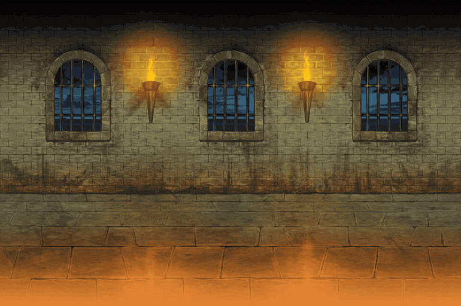

First of all, I would like to mention that there are 2 types of Non-Gacha cats. The Normal cats,
and the Special Cats. Normal cats are ones that you can get just by playing through the first
chapter of EoC (more on this in stages). Special cats, on the other hand, can be unlocked through
playing the game but you need to use catfood, which is the premium currency in the game that
you can luckily get plenty of just by playing, in order to use some of them. These are the two
types of cats that you can unlock and use without using the Gacha system of the game.
Pictured on the right are the Normal cats and Special cats that I currently have.
Some Non-Gacha cats, despite them being free (for the most part) actually have unique abilities
or advantages towards certain enemies. Some deal higher damage towards a certain type,
some have the chance to slow or stun a certain type, etc. For example, Axe cat (Normal cat)
and Ninja cat (Special cat) both deal higher damage towards Red enemies (more on this in the
BC Wiki). Another example
would be Miss Moneko (Special cat) which has a chance of dealing a critical hit that does high damage and
can deal high damage towards Metal enemies (more of this in the BC Wiki),
which only get damaged properly by critical hits. Out of all these Non-Gacha units, the best one out of all of them is
definitely Bahamut cat (Special cat, pictured in the left), which you get after beating EoC Chapter 3 Moon (more of this in the BC Wiki),
due to how important he is later on in the game.
